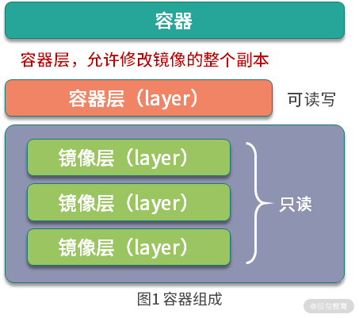
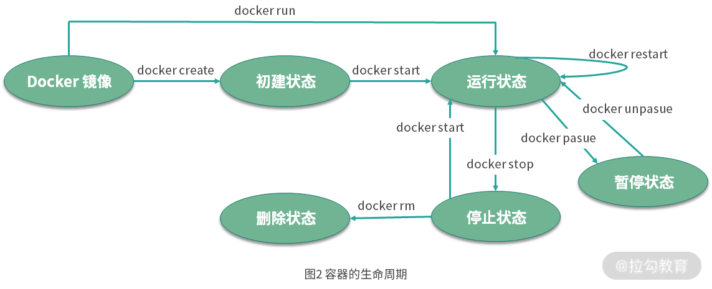

- 00 溯本求源，吃透 Docker！.md
- 01 Docker 安装：入门案例带你了解容器技术原理.md
- 02 核心概念：镜像、容器、仓库，彻底掌握 Docker 架构核心设计理念.md
- 03 镜像使用：Docker 环境下如何配置你的镜像？.md
- 04 容器操作：得心应手掌握 Docker 容器基本操作.md
- 05 仓库访问：怎样搭建属于你的私有仓库？.md
- 06 最佳实践：如何在生产中编写最优 Dockerfile？.md
- 07 Docker 安全：基于内核的弱隔离系统如何保障安全性？.md
- 08 容器监控：容器监控原理及 cAdvisor 的安装与使用.md
- 09 资源隔离：为什么构建容器需要 Namespace ？.md
- 10 资源限制：如何通过 Cgroups 机制实现资源限制？.md
- 11 组件组成：剖析 Docker 组件作用及其底层工作原理.md
- 12 网络模型：剖析 Docker 网络实现及 Libnetwork 底层原理.md
- 13 数据存储：剖析 Docker 卷与持久化数据存储的底层原理.md
- 14 文件存储驱动：AUFS 文件系统原理及生产环境的最佳配置.md
- 15 文件存储驱动：Devicemapper 文件系统原理及生产环境的最佳配置.md
- 16 文件存储驱动：OverlayFS 文件系统原理及生产环境的最佳配置.md
- 17 原理实践：自己动手使用 Golang 开发 Docker（上）.md
- 18 原理实践：自己动手使用 Golang 开发 Docker（下）.md
- 19 如何使用 Docker Compose 解决开发环境的依赖？.md
- 20 如何在生产环境中使用 Docker Swarm 调度容器？.md
- 21 如何使 Docker 和 Kubernetes 结合发挥容器的最大价值？.md
- 22 多阶级构建：Docker 下如何实现镜像多阶级构建？.md
- 23 DevOps：容器化后如何通过 DevOps 提高协作效能？.md
- 24 CICD：容器化后如何实现持续集成与交付？（上）.md
- 25 CICD：容器化后如何实现持续集成与交付？（下）.md
- 26 结束语 展望未来：Docker 的称霸之路.md
04 容器操作：得心应手掌握 Docker 容器基本操作
前几天在咱们的社群里看到有同学在讨论，说面试的时候被问到容器和镜像的区别，有同学回答说没什么区别，也许是在开玩笑，不过这两者的区别很大。今天，我们就来看看容器的相关知识，比如什么是容器？容器的生命周期，以及容器常用的操作命令。学完之后你可以对比下与镜像的区别。
容器（Container）是什么？
容器是基于镜像创建的可运行实例，并且单独存在，一个镜像可以创建出多个容器。运行容器化环境时，实际上是在容器内部创建该文件系统的读写副本。 这将添加一个容器层，该层允许修改镜像的整个副本。如图 1 所示。

图1 容器组成
了解完容器是什么，接下来我们聊一聊容器的生命周期。
容器的生命周期
容器的生命周期是容器可能处于的状态，容器的生命周期分为 5 种。
- created：初建状态
- running：运行状态
- stopped：停止状态
- paused： 暂停状态
- deleted：删除状态
各生命周期之前的转换关系如图所示：

图2 容器的生命周期
通过docker create命令生成的容器状态为初建状态，初建状态通过docker start命令可以转化为运行状态，运行状态的容器可以通过docker stop命令转化为停止状态，处于停止状态的容器可以通过docker start转化为运行状态，运行状态的容器也可以通过docker pause命令转化为暂停状态，处于暂停状态的容器可以通过docker unpause转化为运行状态 。处于初建状态、运行状态、停止状态、暂停状态的容器都可以直接删除。
下面我通过实际操作和命令来讲解容器各生命周期间的转换关系。
容器的操作
容器的操作可以分为五个步骤：创建并启动容器、终止容器、进入容器、删除容器、导入和导出容器。下面我们逐一来看。
（1）创建并启动容器
容器十分轻量，用户可以随时创建和删除它。我们可以使用docker create命令来创建容器，例如：
$ docker create -it --name=busybox busybox
Unable to find image 'busybox:latest' locally
latest: Pulling from library/busybox
61c5ed1cbdf8: Pull complete
Digest: sha256:4f47c01fa91355af2865ac10fef5bf6ec9c7f42ad2321377c21e844427972977
Status: Downloaded newer image for busybox:latest
2c2e919c2d6dad1f1712c65b3b8425ea656050bd5a0b4722f8b01526d5959ec6
$ docker ps -a| grep busybox
2c2e919c2d6d busybox "sh" 34 seconds ago Created busybox
如果使用docker create命令创建的容器处于停止状态，我们可以使用docker start命令来启动它，如下所示。
$ docker start busybox
$ docker ps
CONTAINER ID IMAGE COMMAND CREATED STATUS PORTS NAMES
d6f3d364fad3 busybox "sh" 16 seconds ago Up 8 seconds busybox
这时候我们可以看到容器已经处于启动状态了。 容器启动有两种方式：
- 使用
docker start命令基于已经创建好的容器直接启动 。 - 使用
docker run命令直接基于镜像新建一个容器并启动，相当于先执行docker create命令从镜像创建容器，然后再执行docker start命令启动容器。
使用docker run的命令如下:
$ docker run -it --name=busybox busybox
当使用docker run创建并启动容器时，Docker 后台执行的流程为：
- Docker 会检查本地是否存在 busybox 镜像，如果镜像不存在则从 Docker Hub 拉取 busybox 镜像；
- 使用 busybox 镜像创建并启动一个容器；
- 分配文件系统，并且在镜像只读层外创建一个读写层；
- 从 Docker IP 池中分配一个 IP 给容器；
- 执行用户的启动命令运行镜像。
上述命令中， -t 参数的作用是分配一个伪终端，-i 参数则可以终端的 STDIN 打开，同时使用 -it 参数可以让我们进入交互模式。 在交互模式下，用户可以通过所创建的终端来输入命令，例如：
$ ps aux
PID USER TIME COMMAND
1 root 0:00 sh
6 root 0:00 ps aux
我们可以看到容器的 1 号进程为 sh 命令，在容器内部并不能看到主机上的进程信息，因为容器内部和主机是完全隔离的。同时由于 sh 是 1 号进程，意味着如果通过 exit 退出 sh，那么容器也会退出。所以对于容器来说，杀死容器中的主进程，则容器也会被杀死。
（2）终止容器
容器启动后，如果我们想停止运行中的容器，可以使用docker stop命令。命令格式为 docker stop [-t|–time[=10]]。该命令首先会向运行中的容器发送 SIGTERM 信号，如果容器内 1 号进程接受并能够处理 SIGTERM，则等待 1 号进程处理完毕后退出，如果等待一段时间后，容器仍然没有退出，则会发送 SIGKILL 强制终止容器。
$ docker stop busybox
busybox
如果你想查看停止状态的容器信息，你可以使用 docker ps -a 命令。
$ docker ps -a
CONTAINERID IMAGE COMMAND CREATED STATUS PORTS NAMES
28d477d3737a busybox "sh" 26 minutes ago Exited (137) About a minute ago busybox
处于终止状态的容器也可以通过docker start命令来重新启动。
$ docker start busybox
busybox
$ docker ps
CONTAINER ID IMAGE COMMAND CREATED STATUS PORTS NAMES
28d477d3737a busybox "sh" 30 minutes ago Up 25 seconds busybox
此外，docker restart命令会将一个运行中的容器终止，并且重新启动它。
$ docker restart busybox
busybox
$ docker ps
CONTAINER ID IMAGE COMMAND CREATED STATUS PORTS NAMES
28d477d3737a busybox "sh" 32 minutes ago Up 3 seconds busybox
（3）进入容器
处于运行状态的容器可以通过docker attach、docker exec、nsenter等多种方式进入容器。
- 使用
docker attach命令进入容器
使用 docker attach ，进入我们上一步创建好的容器，如下所示。
$ docker attach busybox
/ # ps aux
PID USER TIME COMMAND
1 root 0:00 sh
7 root 0:00 ps aux
/ #
注意：当我们同时使用docker attach命令同时在多个终端运行时，所有的终端窗口将同步显示相同内容，当某个命令行窗口的命令阻塞时，其他命令行窗口同样也无法操作。
由于docker attach命令不够灵活，因此我们一般不会使用docker attach进入容器。下面我介绍一个更加灵活的进入容器的方式docker exec
- 使用 docker exec 命令进入容器
Docker 从 1.3 版本开始，提供了一个更加方便地进入容器的命令docker exec，我们可以通过docker exec -it CONTAINER的方式进入到一个已经运行中的容器，如下所示。
$ docker exec -it busybox sh
/ # ps aux
PID USER TIME COMMAND
1 root 0:00 sh
7 root 0:00 sh
12 root 0:00 ps aux
我们进入容器后，可以看到容器内有两个sh进程，这是因为以exec的方式进入容器，会单独启动一个 sh 进程，每个窗口都是独立且互不干扰的，也是使用最多的一种方式。
（4）删除容器
我们已经掌握了用 Docker 命令创建、启动和终止容器。那如何删除处于终止状态或者运行中的容器呢？删除容器命令的使用方式如下：docker rm [OPTIONS] CONTAINER [CONTAINER...]。
如果要删除一个停止状态的容器，可以使用docker rm命令删除。
docker rm busybox
如果要删除正在运行中的容器，必须添加 -f (或 –force) 参数， Docker 会发送 SIGKILL 信号强制终止正在运行的容器。
docker rm -f busybox
（5）导出导入容器
- 导出容器
我们可以使用docker export CONTAINER命令导出一个容器到文件，不管此时该容器是否处于运行中的状态。导出容器前我们先进入容器，创建一个文件，过程如下。
首先进入容器创建文件
docker exec -it busybox sh
cd /tmp && touch test
然后执行导出命令
docker export busybox > busybox.tar
执行以上命令后会在当前文件夹下生成 busybox.tar 文件，我们可以将该文件拷贝到其他机器上，通过导入命令实现容器的迁移。
- 导入容器
通过docker export命令导出的文件，可以使用docker import命令导入，执行完docker import后会变为本地镜像，最后再使用docker run命令启动该镜像，这样我们就实现了容器的迁移。
导入容器的命令格式为 docker import [OPTIONS] file|URL [REPOSITORY[:TAG]]。接下来我们一步步将上一步导出的镜像文件导入到其他机器的 Docker 中并启动它。
首先，使用docker import命令导入上一步导出的容器
docker import busybox.tar busybox:test
此时，busybox.tar 被导入成为新的镜像，镜像名称为 busybox:test 。下面，我们使用docker run命令启动并进入容器，查看上一步创建的临时文件
docker run -it busybox:test sh
/ # ls /tmp/
test
可以看到我们之前在 /tmp 目录下创建的 test 文件也被迁移过来了。这样我们就通过docker export和docker import命令配合实现了容器的迁移。
结语
到此，我相信你已经了解了容器的基本概念和组成，并已经熟练掌握了容器各个生命周期操作和管理。那容器与镜像的区别，你应该也很清楚了。镜像包含了容器运行所需要的文件系统结构和内容，是静态的只读文件，而容器则是在镜像的只读层上创建了可写层，并且容器中的进程属于运行状态，容器是真正的应用载体。
那你知道为什么容器的文件系统要设计成写时复制(如图 1 所示)，而不是每一个容器都单独拷贝一份镜像文件吗？思考后，可以把你的想法写在留言区。
© 2019 - 2023 Liangliang Lee. Powered by gin and hexo-theme-book.